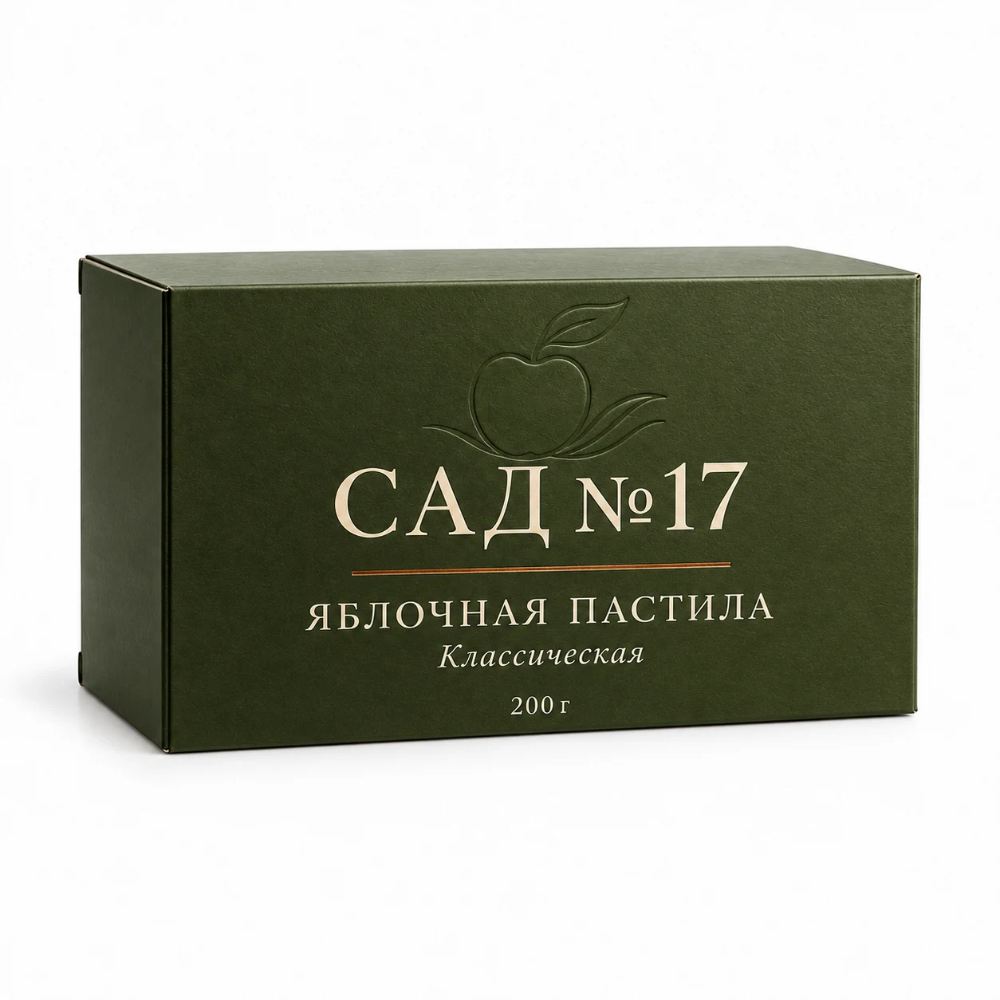
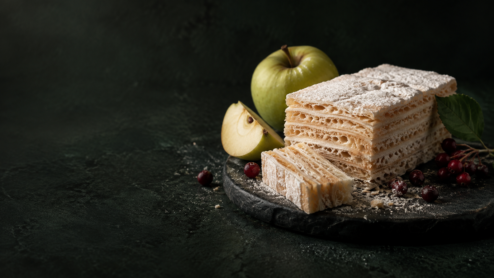
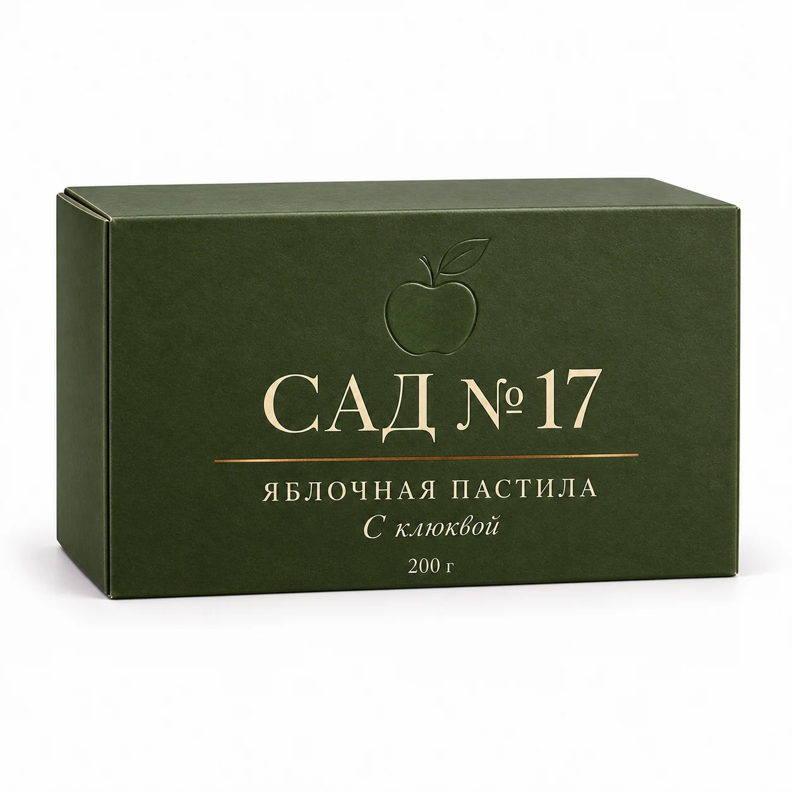
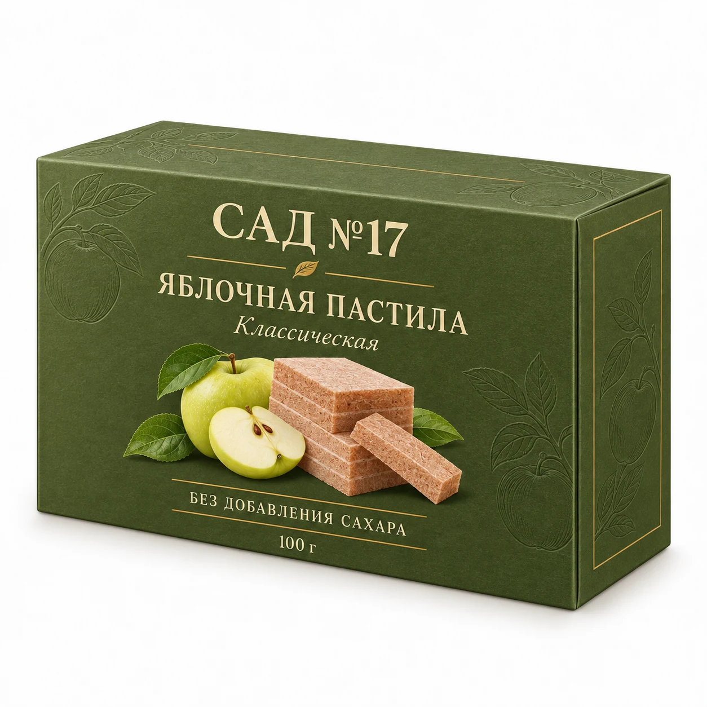
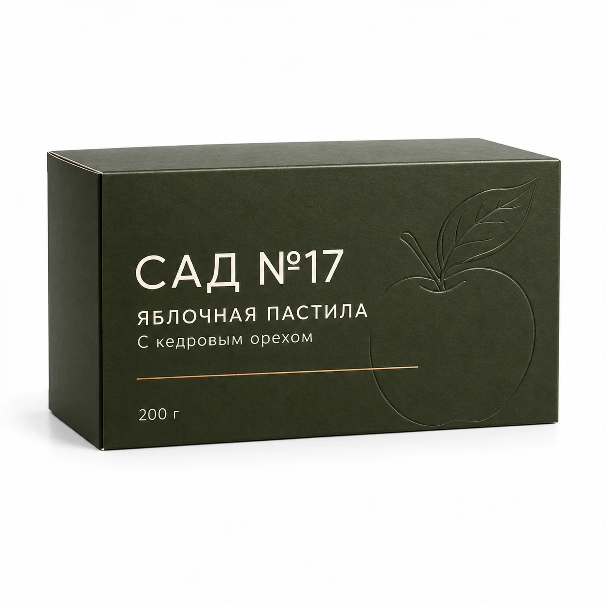
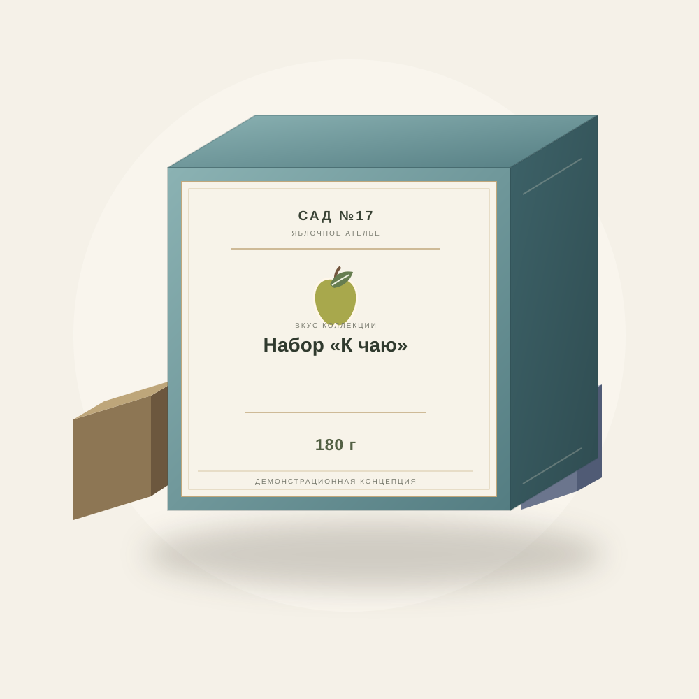
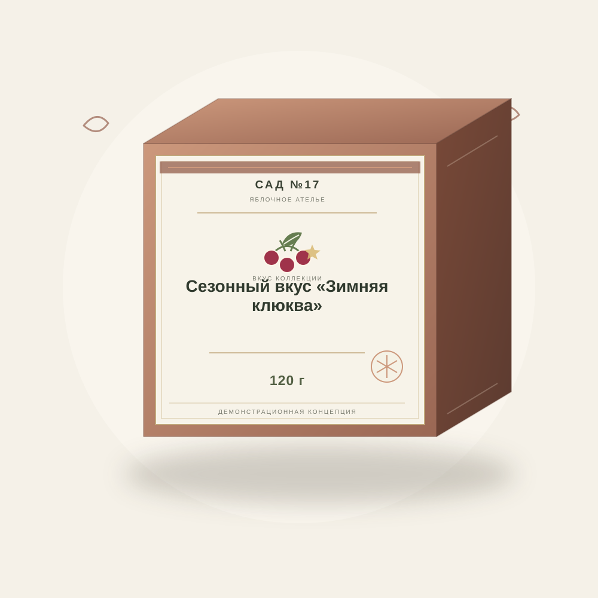
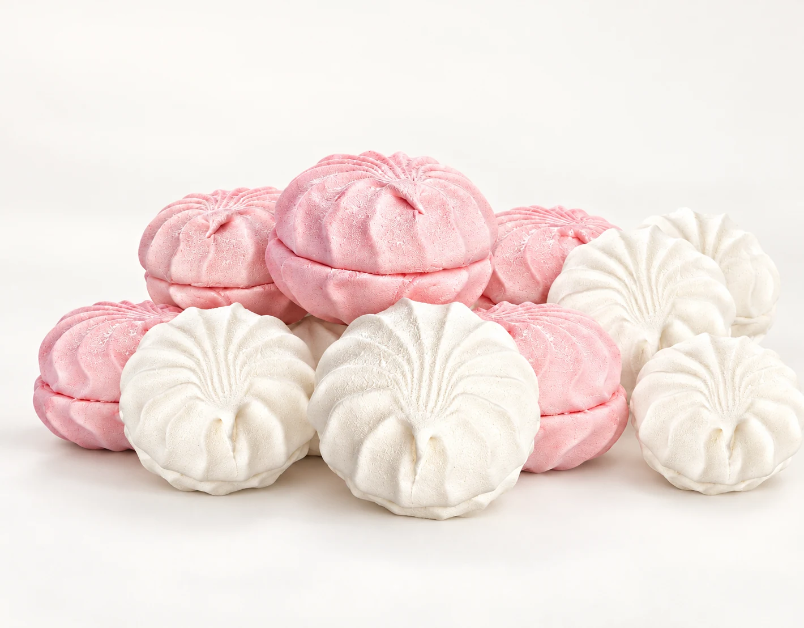

01 · ОСНОВА
Яблочная классика
Спокойный старт для тех, кто хочет сначала услышать яблоко. Сравните классическую версию с более воздушной текстурой зефира.
Выбрать это семействоСАД №17 · ЯБЛОЧНОЕ АТЕЛЬЕ
Воздушная пастила, ягодная смоква и нежный зефир. Найдите любимый вкус, соберите подарок или откройте новый ритуал к чаю.
САД №17 · концепция вымышленного бренда

КАРТА ВКУСОВ
Начните с того, что вам ближе: чистый яблочный вкус, ягодный контраст или новая текстура.

Спокойный старт для тех, кто хочет сначала услышать яблоко. Сравните классическую версию с более воздушной текстурой зефира.
Выбрать это семейство
Клюква, вишня, смородина и ягодный микс задают разные оттенки. Выбирайте по настроению: от звонкой кислинки до насыщенного ягодного профиля.
Выбрать это семейство
Варианты с такой пометкой помогают исследовать яблочный и ягодный вкус без добавленного сахара в концепции состава. Смотрите описание каждой идеи отдельно.
Выбрать это семейство
Ореховая пастила, воздушный зефир и плотная смоква показывают, как одна яблочная идея меняется вместе с формой и ощущением при укусе.
Выбрать это семейство
Соберите знакомый яблочный вкус, одну яркую ягодную ноту и небольшую открытку. В этой семье важны сочетание и способ подачи.
Выбрать это семейство
Яблоко с грушей и корицей для осеннего настроения, клюква с цитрусовой нотой для зимнего. Узнайте, как сезон меняет сочетания в коллекции.
Выбрать это семействоКОЛЛЕКЦИЯ САДА
32 идеи: от нежной яблочной классики до терпких ягод, сезонных сочетаний и готовых подарков. Откройте карточку, чтобы узнать вкус, состав и лучшие сочетания.
Презентационный ассортимент САД №17. Изображения и составы показывают идею коллекции.
ФОРМАТЫ ДЛЯ МОМЕНТА
Подумайте не только о вкусе, но и о том, как вы хотите его разделить и подать.
Нарежьте пласт пастилы узкими лентами и сверните свободными спиралями. Такой способ удобен для дегустации нескольких вкусов на одной тарелке.
Разделите десерт на одинаковые небольшие кусочки: так проще подать его к чашкам и дать каждому попробовать по нескольку сочетаний.
Соберите композицию из знакомого, ягодного и неожиданного вкуса. Оставьте место для открытки и короткой личной фразы.
ВАШ МАЛЕНЬКИЙ РИТУАЛ
Три коротких вопроса — и пара сочетаний из коллекции САДА №17, с которой можно начать.
Или сразу к коллекцииНе получилось загрузить коллекцию. Попробуйте ещё раз.
ОТ ЯБЛОКА К ТЕКСТУРЕ
Редакционная схема для этой концепции: она помогает представить путь яблочного десерта, не описывая производство конкретного предприятия.
Всё начинается с характера фрукта: аромат, свежесть и собственная фруктовая сладость задают направление будущему вкусу.
Яблочная мякоть становится цельной основой. В этой точке к ней можно мысленно добавить ягоду, орех или оставить вкус чистым.
Образ лёгкости появляется благодаря воздуху и объёму. Так в нашей вкусовой карте различаются плотная фруктовая пластина и более воздушная сладость.
Финальный образ — собранная текстура, которую удобно разделить на ломтики и подать маленькими порциями.
Это схема для рассказа о вымышленной коллекции, а не технологическое описание или обещание свойств реального продукта.

Образ коллекции · САД №17ФИЛОСОФИЯ АТЕЛЬЕ
САД №17 начинается с простой идеи: знакомая сладость может быть интересной. В нашей коллекции яблочная основа встречается с ягодами, орехами и пряностями — у каждого сочетания свой характер.
Выбирайте не только по названию. Сравните текстуры, найдите пару к любимому напитку или соберите набор из разных настроений. Подробности каждого вкуса собраны в карточке.
Посмотреть коллекцию ›ПОДАТЬ И ПОПРОБОВАТЬ
Подача меняет впечатление: начните с небольшого кусочка и подберите напиток по контрасту.
ДЛЯ ЧАЙНОЙ ПАУЗЫ
Классическую пастилу подайте с чёрным чаем без добавок, а ягодный вариант — с мягким зелёным. Нарежьте небольшими полосками, чтобы можно было сравнить яблочную основу и ягодную ноту.
Читать о чайной пареСОБРАННЫЙ
К кофе попробуйте контраст: кусочек вишнёвой пастилы рядом с небольшим чёрным кофе или ореховую ноту рядом с мягким латте. Сначала сделайте глоток, затем попробуйте десерт — так легче уловить разницу.
Читать о кофейной пареС ВНИМАНИЕМ
Для маленького набора соедините знакомый яблочный вкус, одну ягодную ноту и открытку. Чередуйте упаковки по цвету и формату, оставляя каждому вкусу немного воздуха.
Читать о композиции набораТИХИЙ ЖЕСТ · САД №17
Выберите формат, наполните коробку любимыми вкусами и сохраните открытку с композицией. Это демонстрационная концепция: заказов и оплаты здесь нет.
Можно выбрать несколько одинаковых вкусов, пока есть свободные места.
МАЛЕНЬКАЯ ПАУЗА
Яблочная классика
для спокойного вечера.
Любимое сочетание
для короткой паузы.
Небольшой знак
внимания к деталям.
ТРИ ФОРМАТА
Вымышленная коллекция для личного ритуала, подарка и командной идеи.
ИДЕИ ДЛЯ КОМАНДЫ
Три сценария, которые можно использовать как отправную точку для собственного события.
Две яблочные идеи, ягодный вкус и короткая карточка «рады знакомству» для нового коллеги.
Небольшое сочетание классики и яркого вкуса с открыткой, где команда пишет одно общее спасибо.
Порционные кусочки на столе регистрации и мини-карточка с выбором вкусов для неформального знакомства.
Это идеи оформления для вымышленного бренда; здесь нет заказа, продажи, цены или доставки.
ИДЕЯ ДЛЯ СОБЫТИЙ И КОМАНД
Для нового сотрудника, гостя события или партнёра: небольшой набор может передать больше, чем стандартный сувенир. Сочетайте несколько вкусов, выберите формат и добавьте личное пожелание.
ЗАПИСКИ АТЕЛЬЕ
Короткие заметки о сочетаниях, подаче, текстуре и маленьких деталях подарка.
Яблочная основа, ягоды и текстура: с чего начать сравнение.
Открыть заметку ↗ 02 · БАЛАНСКак замечать кислинку, сладость и долгий ягодный оттенок.
Открыть заметку ↗ 03 · ЧАЙТемпература напитка, размер кусочка и порядок дегустации.
Открыть заметку ↗ 04 · КОФЕКонтрастный и мягкий сценарии без сложных правил.
Открыть заметку ↗ 05 · ПОДАРОКПринцип знакомого вкуса, яркой ноты и личного сообщения.
Открыть заметку ↗ 06 · ТЕКСТУРАЛенты, порции и наборы для разных моментов.
Открыть заметку ↗ПОЛЕЗНО ЗНАТЬ
С классической яблочной пастилы: так проще почувствовать воздушную текстуру и яблочную основу. Если любите кислинку, попробуйте клюкву или вишню. Если хочется более плотного фруктового вкуса — смокву. Подборщик учитывает настроение, повод и предпочтение по добавлению сахара.
В этой коллекции пастила — мягкий слоистый формат, смоква — плотная фруктовая пластинка, зефир — нежная отдельная порция. Разные текстуры удобно сравнить в наборе «Три настроения». О форматах подробнее рассказано в журнале.
В предложенном составе таких концепций нет добавленного сахара. Фрукты и ягоды при этом содержат природные сахара. Эта пометка не означает отсутствие сахаров и не является рекомендацией по питанию; составы здесь демонстрационные.
Для первого знакомства подойдёт набор с несколькими текстурами; любителю ярких вкусов — ягодная подборка. Для небольшой благодарности можно собрать три предмета в студии подарков, для более разнообразной композиции — пять. К набору можно добавить пожелание и скачать открытку.
Откройте любую карточку товара. В разделе «Подробности вкуса» указаны предлагаемый состав, аллергены, масса, текстура и сочетания. В коллекции есть варианты с яичным белком и орехами; демонстрационные описания не заменяют маркировку реального продукта.
Идея подачи — небольшие ломтики на сухой тарелке рядом с напитком. Для концептуальных упаковок указано хранение в сухом месте, отдельно от сильных запахов и влажности. Для реального продукта всегда следуйте условиям на его упаковке.
Да. Кнопка «+» сохраняет вкусы в подборку в этом браузере. Подарочная студия отдельно сохраняет черновик и позволяет скачать PNG-открытку или скопировать состав. Общий сброс настроек находится внизу сайта.
САД №17 — вымышленная презентационная концепция, поэтому сайт не принимает заказы или оплату. Все вкусы, упаковки и материалы созданы для демонстрации возможного бренда.